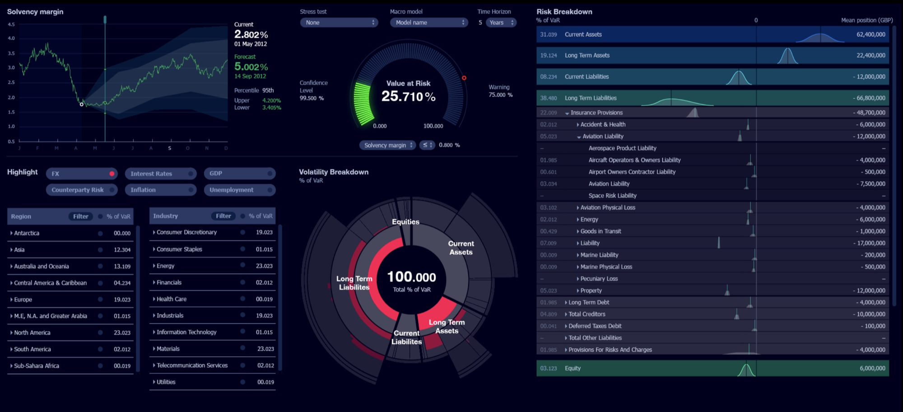
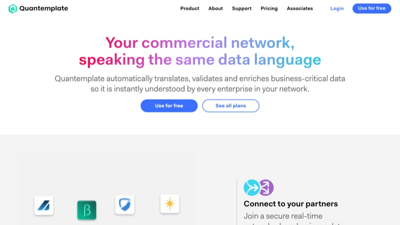
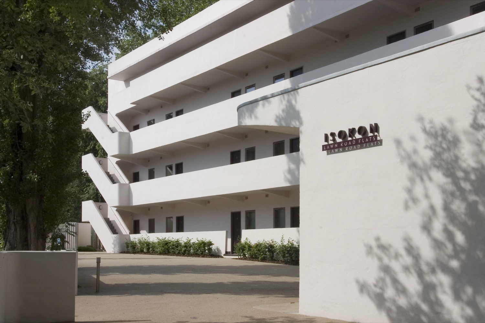
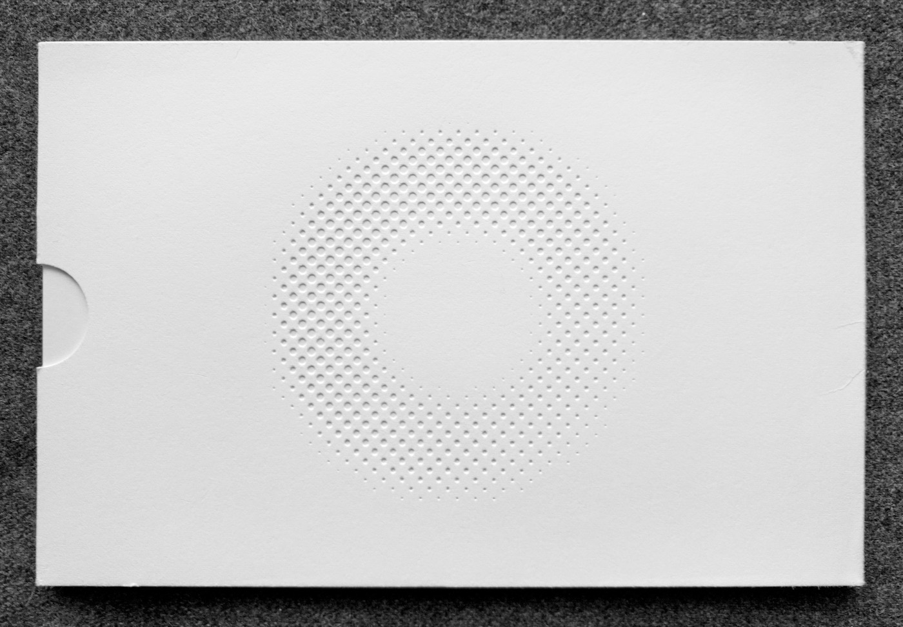

Design Craft
I love the craft of design. I like to know how things are made, whether that means working with a printer, a fabricator or an engineer. Alongside the process and systems thinking elsewhere on this site, here’s a closer look at building brands, finding the finesse, and caring about the details more than is probably reasonable.
Defining the Quantemplate brand
Back in 2013, there was nothing that looked quite like Quantemplate. We were inspired by the Bloomberg Terminal as a power tool, and a Lamborghini dashboard as, well, a different kind of power tool.
We wanted an interface that felt comfortable for long work sessions, and I brought the concept to life with a dark UI and a sparingly applied set of neon colours.

The visual style and the craft that went into the interface were consistently cited by new hires as a reason for joining.
The look drew some pushback from sales and prospective buyers, but we believed the brand was a core differentiator and stuck with it. Funnily enough, when Apple introduced Dark Mode on iOS in 2019, we stopped hearing those concerns.

Quantemplate website and brand Visit quantemplate.comIsokon Gallery
I’ve had a long involvement with the Isokon building, the famous Grade I listed apartment block in north London. My first contribution was to design a sign for it in 2005. There was no precedent for a sign on the building so the material and finish mattered. Cast aluminium was the hard way, but the right way for durability and quality.
In 2014 I co-founded a micro-museum in the building’s former garage space to tell its remarkable history. I co-designed the permanent exhibition, mentoring an MA student through the work.
Every couple of years we hold a special exhibition focusing on an important resident. Most recently this was Egon Riss, one of modernism’s most elusive characters. I spent my weekends designing a book to tell his story. Uncoated paper, chunky typography and a plywood colour palette capture the spirit of his work.

The Isokon building (Lawn Road Flats) and the cast sign, designed 2005.
White Rainbow
White Rainbow was a gallery presenting international artists, with a focus on contemporary art from Japan. I designed a flexible identity and, over three years, a series of exhibition catalogues, invitations and supporting materials.
Each exhibition was a chance to try something different. Through paper, finishing and binding, we explored what a catalogue could be: a collection of folding posters, a map, a notebook. I was fortunate to work with an ambitious client and a printer willing to experiment. We made some remarkable work together.

Surface Tension catalogue, rear cover: the White Rainbow logo, blind-embossed.